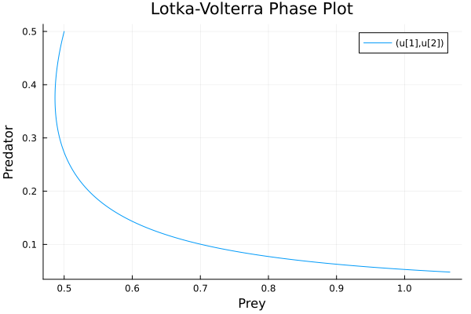
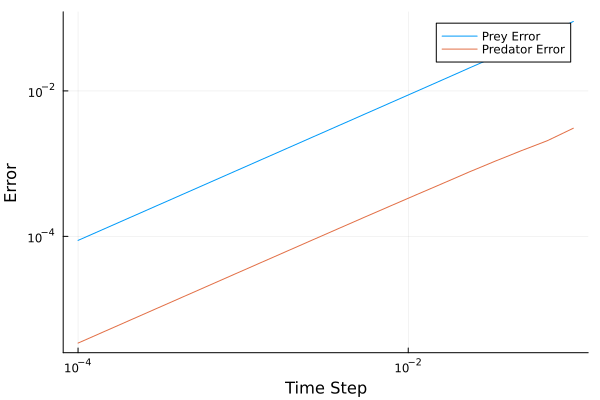

Algorithm Accuracy
The only algorithm available in Mermaid is the MinimumTimeStepper. You may be interested to understand how separating a system into multiple components to be solved affects its accuracy.
In some situtations, it doesn't make sense to talk about the accuracy of a Mermaid algorithm. For example, discrete time solvers are typically perfectly accurate (to floating point tolerances) and have lower bounds on the timestep that can be used, both properties that make it impossible to assign an $\mathcal{O}(h^n)$ accuracy to a solver. However, it can be useful to understand how these connections may affect the accuracy of continuous time components, such as differential equations.
We can assess the accuracy of the Mermaid solver numerically, by comparing a system of differential equations, solved once with very high accuracy, and then solved many times with different syncronisation time steps. As the synchronisation time step descreases, we should expect the accuracy to increase, and we can estimate the order accuracy from these measurements.
using OrdinaryDiffEq
using Plots
# Lotka-Volterra equations
function f!(du, u, p, t)
du[1] = p[1] * u[1] - p[2] * u[1] * u[2]
du[2] = p[3] * u[1] * u[2] - p[4] * u[2]
end
u0 = [0.5, 0.5]
p = [1.5, 4.0, 1.0, 3.0]
tspan = (0.0, 1.0)
prob = ODEProblem(f!, u0, tspan, p)
sol = solve(prob, Tsit5(), abstol=1e-10, reltol=1e-6)
plot(sol, vars=(1, 2), xlabel="Prey", ylabel="Predator", title="Lotka-Volterra Phase Plot")
By using an adaptive solver with tight tolerances, we can get a very accurate estimate of the true solution which we can compare to one derived through Mermaid connections. We will set up a Mermaid simulation to reproduce the above ODE system and solve it with varying timesteps.
using Mermaid
function f1!(du, u, p, t)
du[1] = p[1] * u[1] - p[2] * u[1] * u[2]
du[2] = 0.0
end
function f2!(du, u, p, t)
du[1] = 0.0
du[2] = p[3] * u[1] * u[2] - p[4] * u[2]
end
u0 = [0.5, 0.5]
p = [1.5, 4.0, 1.0, 3.0]
tspan = (0.0, 1.0)
prob1 = ODEProblem(f1!, u0, tspan, p)
prob2 = ODEProblem(f2!, u0, tspan, p)
error1 = []
error2 = []
tsteps = logrange(1e-4, 1e-1, 20)
for tstep in tsteps
comp1 = DEComponent(prob1, Tsit5(); name="prey_comp", state_names=Dict("x" => 1, "y" => 2), intkwargs=(abstol=1e-10, reltol=1e-6, maxiters=Inf), timestep=tstep)
comp2 = DEComponent(prob2, Tsit5(); name="predator_comp", state_names=Dict("x" => 1, "y" => 2), intkwargs=(abstol=1e-10, reltol=1e-6, maxiters=Inf), timestep=tstep)
conn1 = Connector(inputs = ["prey_comp.x"], outputs = ["predator_comp.x"])
conn2 = Connector(inputs = ["predator_comp.y"], outputs = ["prey_comp.y"])
mp = MermaidProblem(components = [comp1, comp2], connectors = [conn1, conn2], tspan=tspan)
alg = MinimumTimeStepper()
solMer = solve(mp, alg; saveat = (integrator, t) -> t>0.9, save_vars = ["prey_comp.x", "predator_comp.y"])
push!(error1, abs(solMer(1.0)["prey_comp.x"] - sol.u[end][1]))
push!(error2, abs(solMer(1.0)["predator_comp.y"] - sol.u[end][2]))
end
plot(tsteps, error1, label="Prey Error", xlabel="Time Step", ylabel="Error", xscale=:log10, yscale=:log10)
plot!(tsteps, error2, label="Predator Error")
Plotting the global error (error after many timesteps) against the time step used (on a log-log plot) gives a straight line, and the gradient of the line tells us the accuracy order of the solver.
using Statistics
logerror1 = log10.(error1)
logerror2 = log10.(error2)
logtsteps = log10.(tsteps)
grad1 = sum((logerror1 .- mean(logerror1)) .* (logtsteps .- mean(logtsteps))) / sum((logtsteps .- mean(logtsteps)).^2)
grad2 = sum((logerror2 .- mean(logerror2)) .* (logtsteps .- mean(logtsteps))) / sum((logtsteps .- mean(logtsteps)).^2)
@show grad1, grad2(1.0010067310376125, 0.9848513427372126)The Mermaid solver accuracy is $\mathcal{O}(h)$. In future this may be improved upon, in particular 2nd order methods $(\mathcal{O}(h^2))$should be achievable through the current interface.